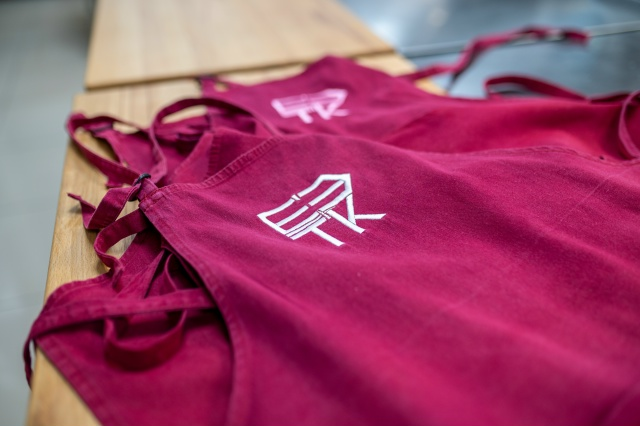
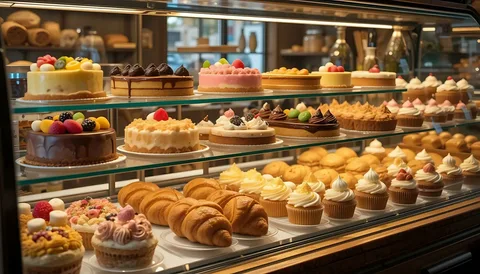
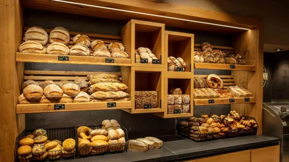
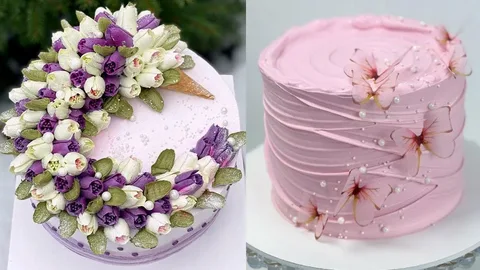

Добро пожаловать на кулинарные курсы для школьников и
студентов! Здесь вы не просто научитесь готовить, а откроете для себя
мир вкусов, ароматов и настоящего творчества. Под руководством опытных шеф-поваров
вы освоите самые интересные рецепты, узнаете секреты профессиональных поваров и сможете удивить друзей и близких
своими кулинарными шедеврами. «Вкусные каникулы»
— это не только полезные навыки, но и отличное настроение, новые знакомства и, конечно, вкусные блюда , которые вы приготовите сами! Присоединяйтесь — будет весело и аппетитно!

Виды курсов
Кондитерское искусство

Мечтаете создавать десерты, которые восхищают не только вкусом, но и видом? Перестаньте
просто смотреть красивые картинки в интернете — научитесь создавать их сами! Наш курс — это
ваш ключ к миру профессионального кондитерского искусства, где мы проведём вас от азов
теории до уверенной практики под руководством опытных шеф-кондитеров. Вы не просто заучите
рецепты, а поймёте саму суть процессов: как работать с капризным бисквитом, создавать
стабильные муссы и добиваться идеальной текстуры крема. Мы научим вас всем секретам
приготовления настоящих шедевров — от праздничных тортов и изящных пирожных до современных
десертов, которые станут украшением любого стола. Забудьте о страхе перед духовкой и
неуверенности в своих силах. Под чутким руководством наставников вы шаг за шагом освоите все
техники, научитесь грамотной сборке, выравниванию и профессиональному декору. Превратите
своё увлечение в мастерство, которое будет радовать вас и ваших близких, а возможно — станет
началом новой успешной карьеры.
Современная выпечка

Устали от бабушкиных рецептов и хочется чего-то по-настоящему крутого и актуального? Хватит
мечтать о красивых десертах из соцсетей — пора научиться их готовить! Наш курс «Современная
выпечка» — это не про скучные пирожки, а про тренды, стиль и вкусы, которые взрывают
интернет. Мы научим тебя работать с самыми модными видами теста: от нежнейшего японского
бисквита «Кастелла» и хрустящих краффинов до идеальных чизкейков и воздушных макаронс. Ты
поймёшь, как добиться той самой текстуры и вкуса, за которыми раньше приходилось идти в
дорогую кофейню. Это твой шанс стать настоящим десертным трендсеттером! Забудь про готовые
смеси — мы покажем, как создавать авторские десерты, которые будут только у тебя. Ты сможешь
удивлять друзей на тусовках, готовить стильные подарки для родителей и собирать сотни лайков
в соцсетях своими кулинарными шедеврами. Преврати своё увлечение в модный навык, который
выделит тебя из толпы. Это отличный способ отдохнуть от учёбы, найти креативное хобби и,
возможно, даже начать свой собственный проект. Удивлять близких теперь можно не просто
пирогом, а настоящим произведением кондитерского искусства.
Декор и оформление

Вы научитесь готовить и правильно использовать различные виды кремов — от нежных сливочных до
плотных масляных, освоите техники окрашивания, выравнивания тортов и создания классических
украшений, таких как цветы, бордюры и рельефные узоры. Отдельное внимание уделяется работе с
шоколадом: вы узнаете секреты темперирования, научитесь создавать изящные фигуры, ажурные
элементы, шоколадные вуали и эффектные подтёки, которые придают торту современный и стильный
вид. Работа с мастикой и сахарной пастой откроет для вас безграничные возможности для
творчества: вы сможете обтягивать торты, лепить объёмные фигурки, создавать реалистичные
цветы и сложные текстуры, превращая каждый десерт в произведение искусства. Курс сочетает в
себе теоретические знания и интенсивную практику под руководством опытного наставника. Вы не
только освоите технические приёмы, но и разовьёте чувство композиции, научитесь гармонично
сочетать цвета и реализовывать собственные творческие идеи. Этот курс станет отличной
основой для тех, кто хочет превратить увлечение в профессию, а также для всех, кто мечтает
радовать себя и близких уникальными и красивыми тортами для любого праздника.